Synopsis
“The Place of Dum Palm” interrogates the symbolic use of landscape within Italian colonial discourse: what words were used to evoke the light, the weight of air, nature framing colonization as a natural, even inevitable, extension of the landscape itself? In the late nineteenth century, during the early phase of Italy’s occupation of Eritrea, the Dum palm, regarded as the most important plant of the local flora by Italian enterprises, was subject to extraction for local exploitation and export. In 2025, in a greenhouse in Amsterdam, I confronted a specimen of Doum palm. “What do your fibers, your roots, your trunk remember?”
From this encounter, a series of discards, micro-fractures, and glitches emerge in the frame to haunt the present, bringing to the surface fragments of that rhetorical discourse.
Screened in the collective exhibition “Some Matters Do Not Sattle” hosted in Saloon Veneman gallery, Eindhoven. I was in charge of the graphics for social communication of the opening event and all the print matter.
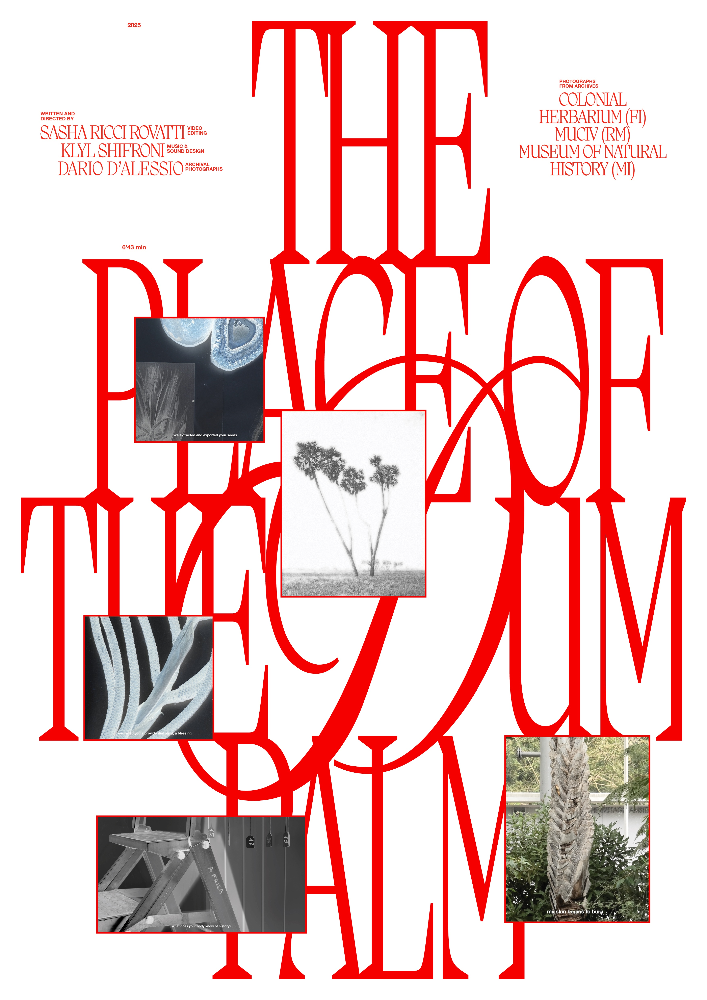
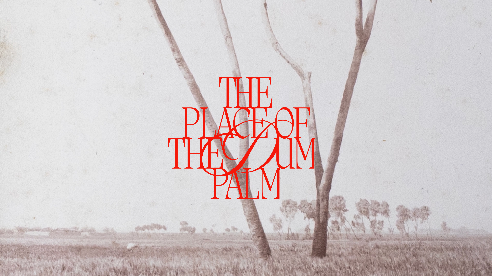
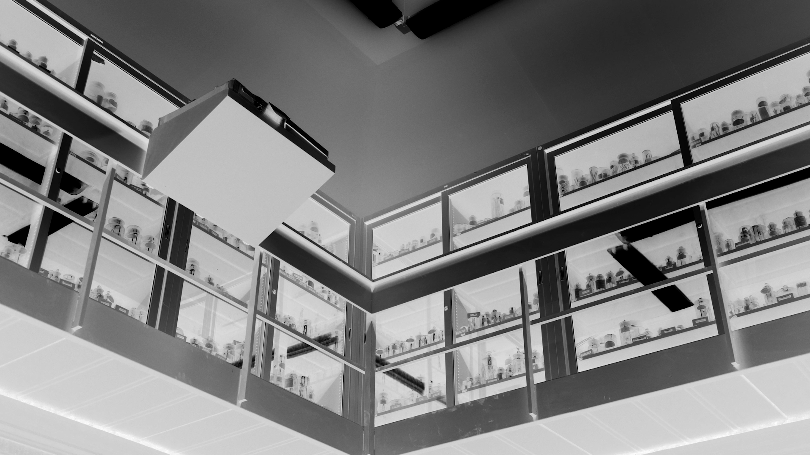
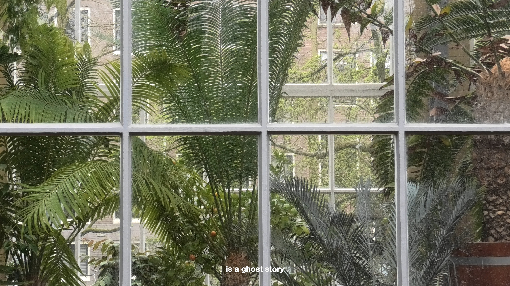
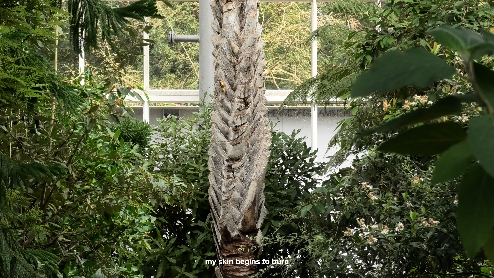
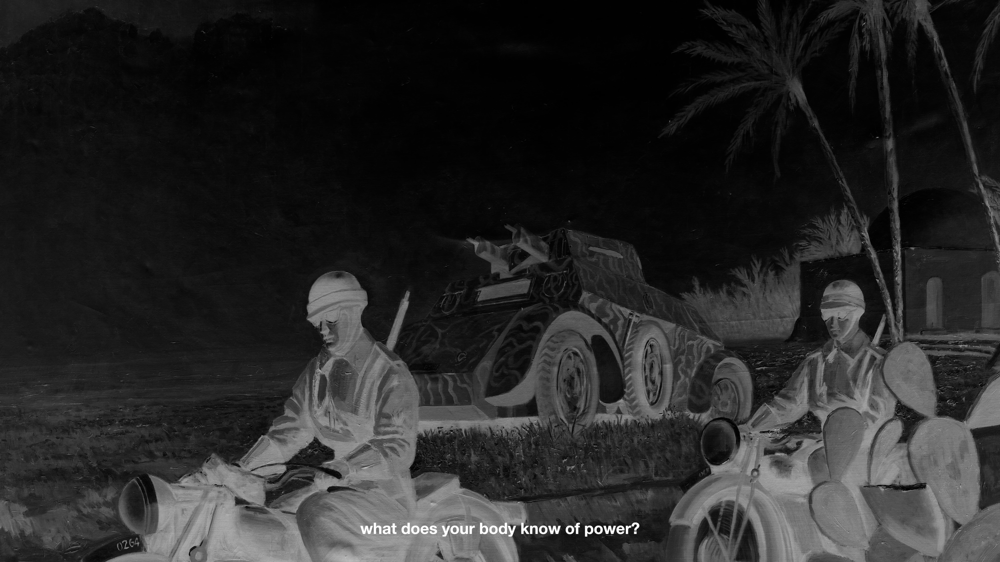
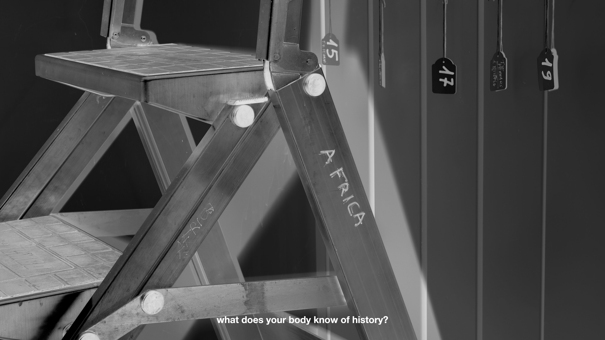
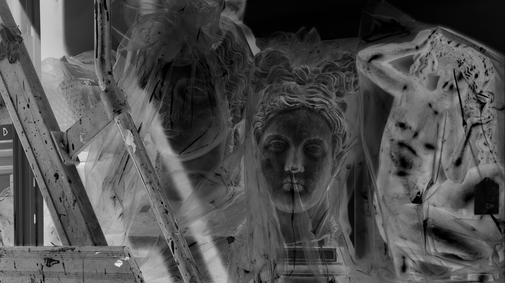
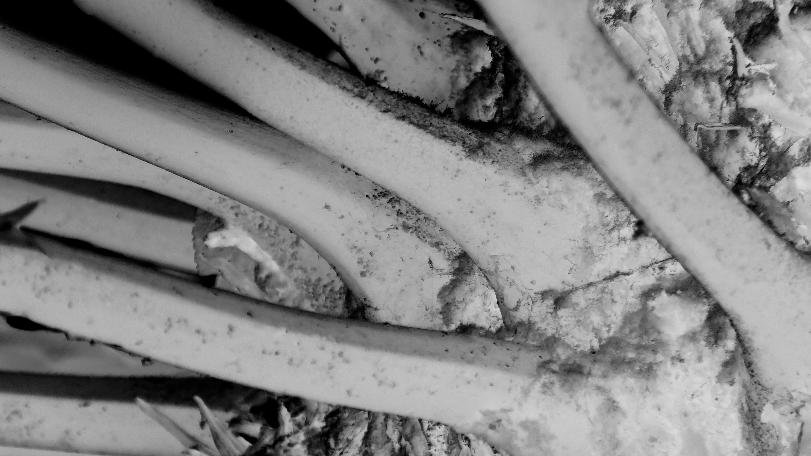
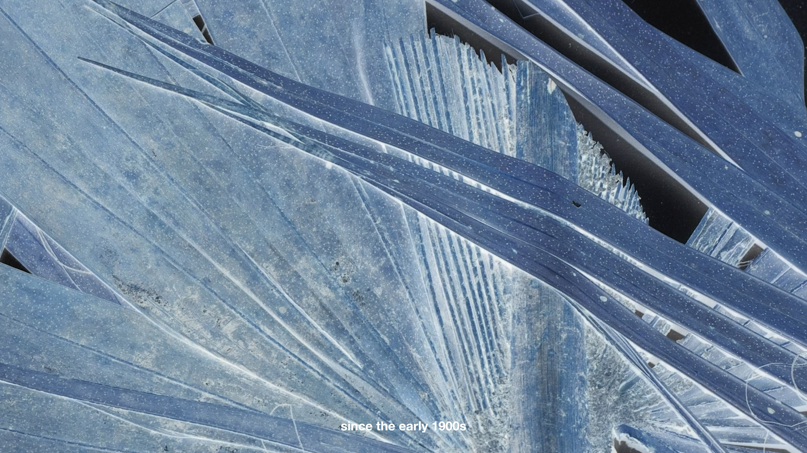
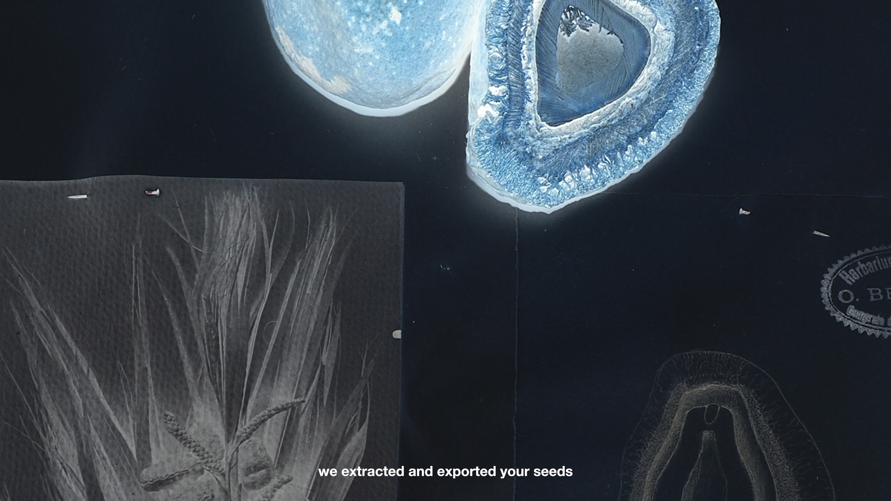
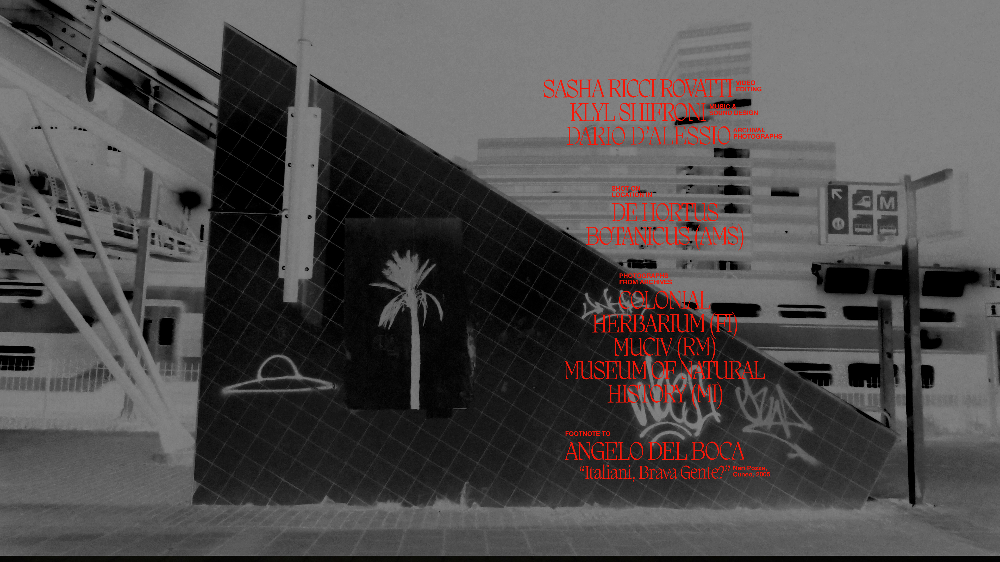
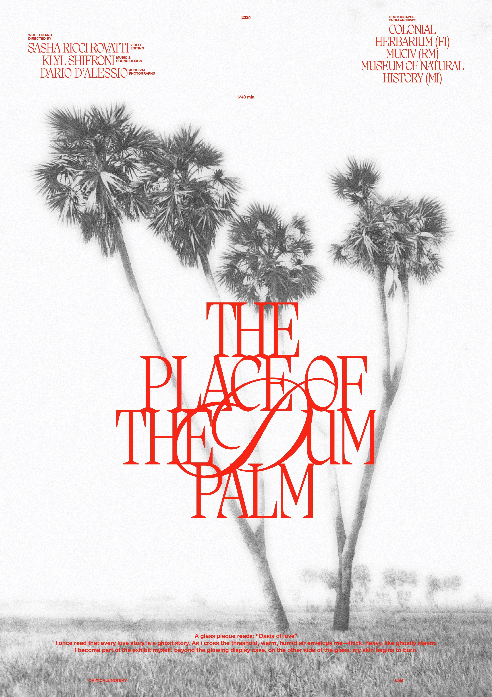